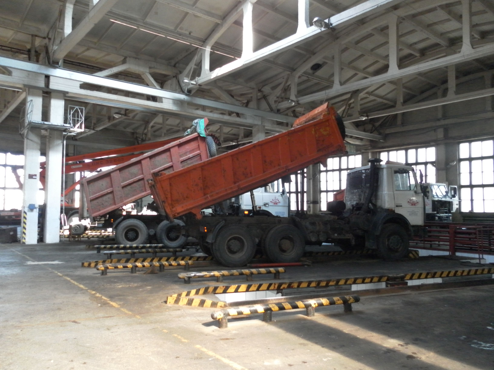
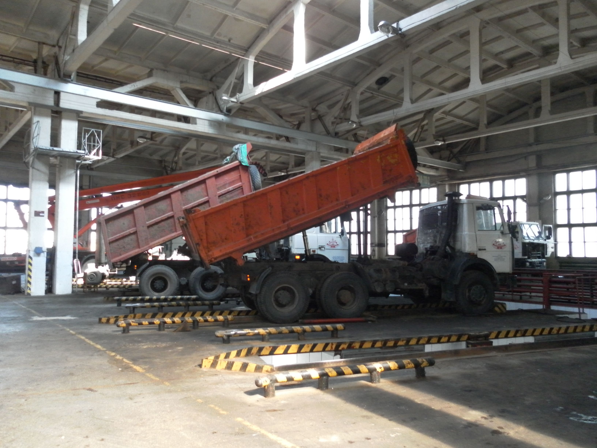
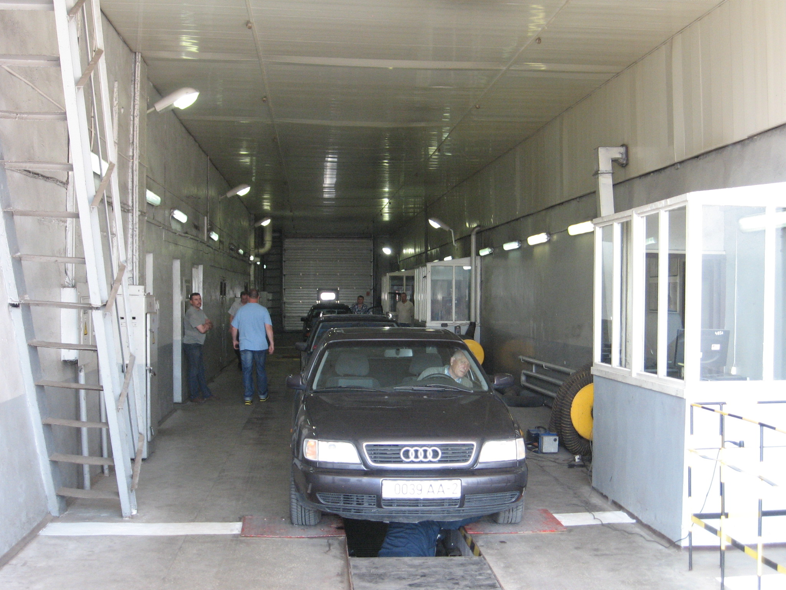
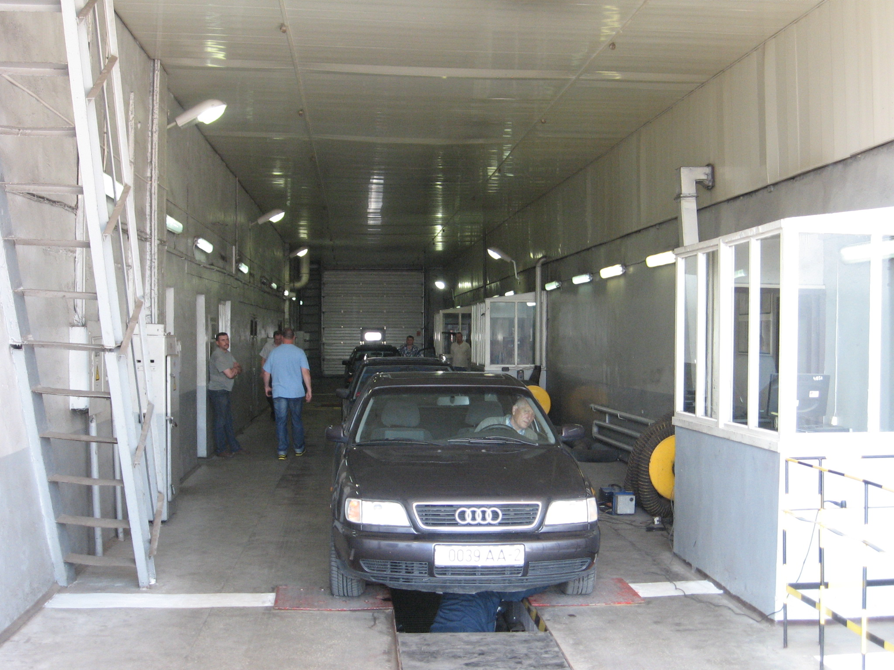

Филиал "АТП №5 г. Витебска" ОАО "Витебскоблавтотранс" предлагает следующие виды услуг:
- Внутриреспубликанские грузоперевозки
Начальник отдела перевозок: Симоненко Александр Владимирович
тел. 8 (0212) 67 92 01; моб. 8 (029) 597 45 54


- Ремонт автотранспорта
- Шиномонтаж и балансировка колес грузовых и легковых автомобилей
- Проверка и регулировка дымности и токсичности выхлопных газов
- Компьютерная диагностика легковых и грузовых автомобилей
- Развал, схождение легковых автомобилей
- Замена масла
- Предоставление мест для ремонта автомобилей
- Стирка спецодежды
- Мойка грузовых и легковых автомобилей
- Мойка при сан. обработке
- Гарантийное техническое обслуживание автомобилей МАЗ (на участке г. Витебск)
Начальник ремонтной мастерской: Автушко Александр Александрович
тел: 8 (0212) 67 92 21; моб: 8 (029) 241 19 14
Время работы:
Пн. – Пт.
7:30 – 16:30
Начальник мастерской участка г.Витебск: Карпович Александр Александрович
тел моб: 8 (029) 591 19 76
Время работы:
Пн. – Пт.
8:00 – 17:00

 

- Шлифовка коленчатых валов всех видов грузовых и тракторных двигателей
- Расточка, загильзовка, хонировка блоков цилиндров всех видов л/авто
- Восстановление коренных постелелей блоков цилиндров всех видов двигателей грузовых автомобилей типа КАМАЗ, МАЗ, MAN, Mercedes, Scania Fiat-Ivecoи т.п., а также тракторные Д-260 и т.п.
- Шлифовка головок блока цилиндров двигателей л/авто
Мастер участка "Руба": Евсеев Павел Александрович
тел моб: 8 (029) 214 20 26Старший мастер участка "Руба": Дмитрук Евгений Валентинович
тел моб: 8 (029) 213 62 03
Время работы:
Пн. – Пт.
7:30 – 16:30


- Проведение гостехосмотра грузовых и легковых автомобилей
Начальник диагностической станции: Хасиев Руслан Султанович
тел: 8 (0212) 67 93 05; моб: 8(029) 81 85 105
Время работы:
Пн. – Вс.
8:00 – 20:00

 

- Предрейсовый медицинский, технический контроль
Юрисконсульт: Вялов Сергей Григорьевич
тел. 8 (0212) 67 93 19; моб: 8 (029) 290 79 87
- Платная автостоянка грузовых и легковых автомобилей
тел: 8 (0212) 67 92 20 моб: 8 (033) 614 35 28


- Продовольственный магазин
тел: 8 (0212) 67 92 21
Время работы:
Пн. – Пт.
8:30 – 17:30